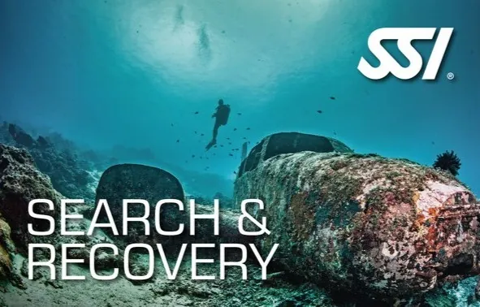

Search & Recovery
Este programa irá ensinar os conhecimentos e habilidades necessárias para planejar e conduzir de forma segura mergulhos de busca e recuperação. Aprenderá sobre padrões de busca, planos de mergulho especializados, comunicação subaquática, e como recuperar objetos de tamanhos pequenos a médios utilizando equipamento especializado. Após a conclusão do programa receberá a certificação da Especialidade SSI Busca e Recuperação.



 Open Water Diver
Open Water Diver React Right
React Right Dive Guide
Dive Guide